BinoMe
Choose. Combine. Explore!
A wooden role-play toy that helps 3–5 year olds explore emotions. Slide clear discs with eyes, mouths and faces into its grooves, look through, and see who you've made.
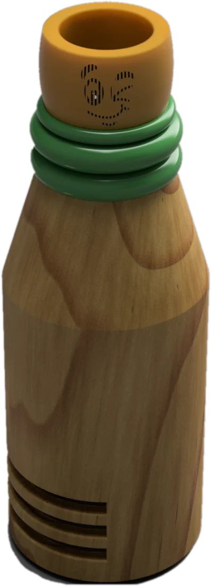
Same brief, a second answer.
Design a playful, low-tech toy that encourages self-expression, creativity and holistic development for 3–5 year olds in Anganwadi centres. Of the two ideas I developed, this one is about feelings: a role-play toy for emotional intelligence.
- Ages 3–5
- Role-play
- Emotional intelligence
- Low-tech, low-cost
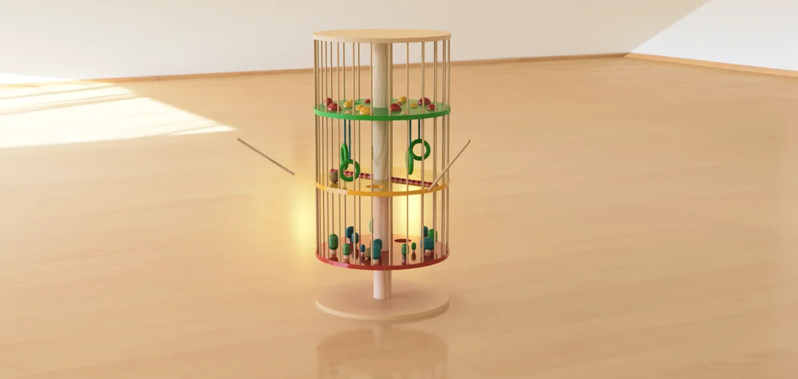
The researchBinoMe grew from the same Anganwadi research as BlowPli. It's all on that page.A peephole full of faces.
BinoMe is a hollow, handcrafted wooden toy with grooves to slide in transparent acrylic discs. Each disc carries a facial feature (eyes, a nose, a mouth), a colour element or a silhouette.
Stack a few, look through the eyepiece, and they line up into one face: happy, cheeky, scared, grumpy. Kids get the freedom to explore emotions and stories visually.
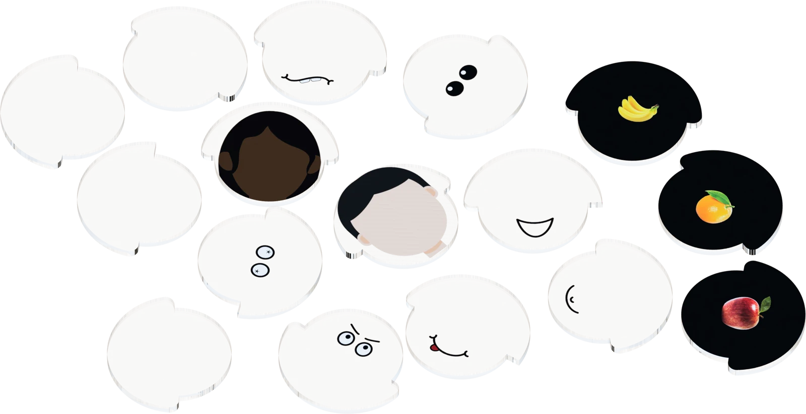
the discs ↖
Eyes, mouths, faces with different skin tones and hair, and coloured objects like fruit. Plain discs are left blank so kids can draw their own.
Pick a disc for each groove.
This is what a child sees through the eyepiece. Swap the discs and watch the expression change.
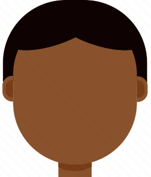
how is he feeling?
1Face
2Eyes
3Mouth
Choose, slide, look.
-
Step 01
Choose
Pick discs with facial features or coloured objects, or draw on plain ones.
-
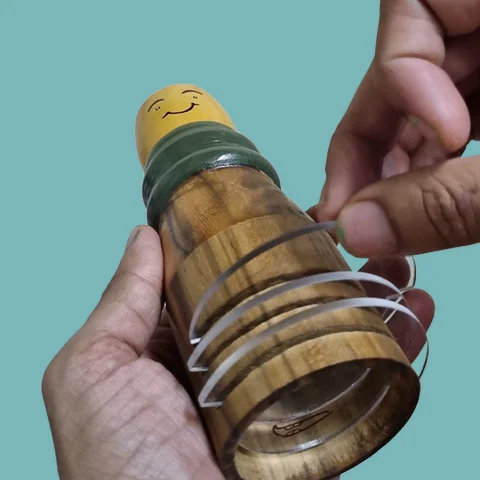
Step 02Slide
Slide them into the grooves of the wooden body, in any order you like.
-
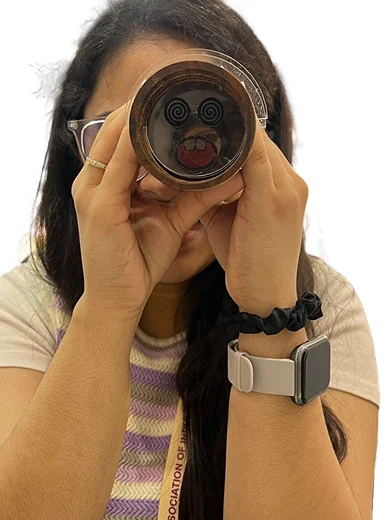
Step 03Look
Peek through the observing end to see the face you've combined.
Build characters together
Use silhouette discs to make characters and grow stories with friends or the Anganwadi teacher.
Shine a light through it
Point a torch through BinoMe to project your face onto a wall, big enough for the whole class.
Naming a feeling starts with seeing it.
Children in Anganwadi centres often lack expressive tools that nurture creativity and emotional growth. BinoMe offers a multi-sensory, expressive play experience using light, colour and emotion-building to spark imaginative thinking and communication.
- Socio-emotional
- Creative play
- Co-operative play
- Imaginative play
- Cognitive
- Fine-motor
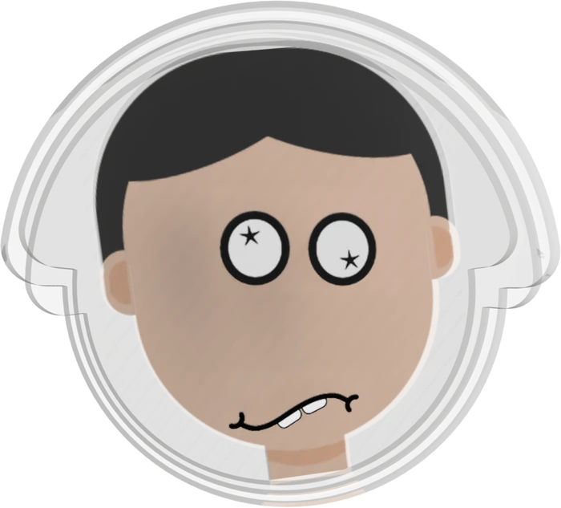
From first render to kids' hands.
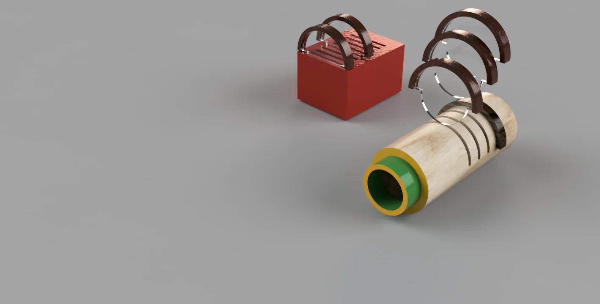
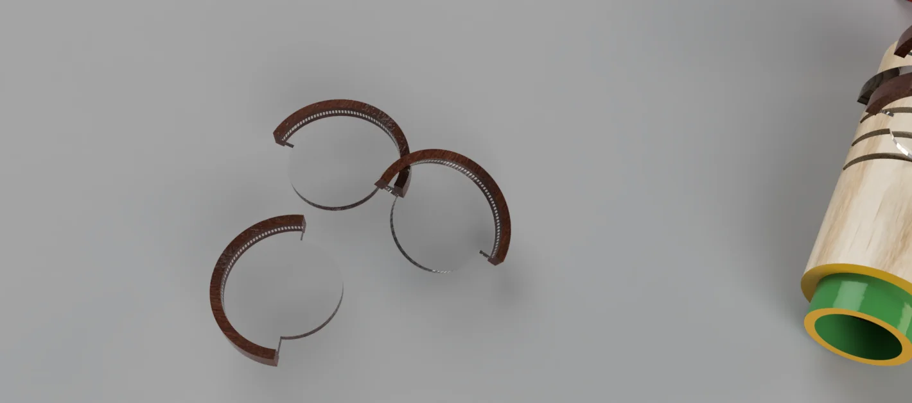
first concept
It started as a straight wooden tube, with wooden handles on each disc and a box to keep them in. The final toy became a bottle shape with a grip and an eyepiece sized for small hands.
Testing early prototypes at the Anganwadi
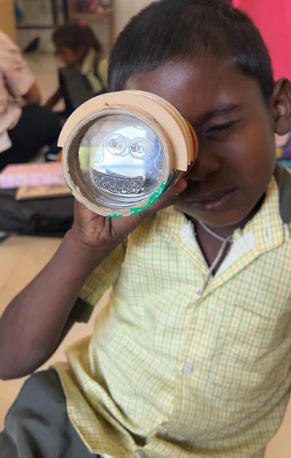
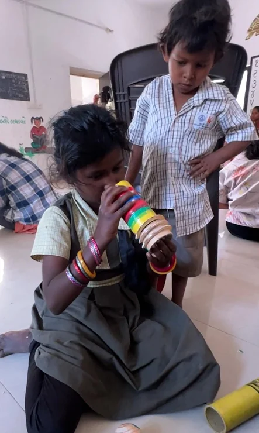
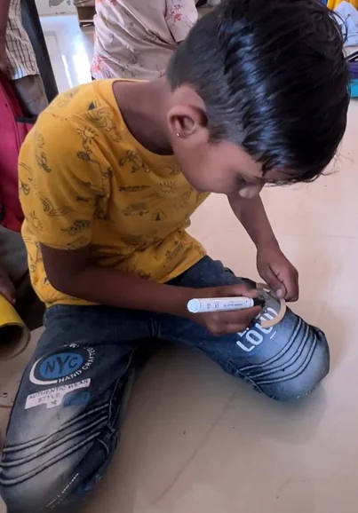
The beta prototype.
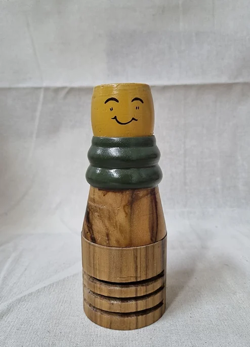
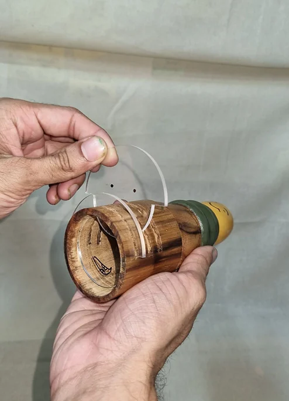
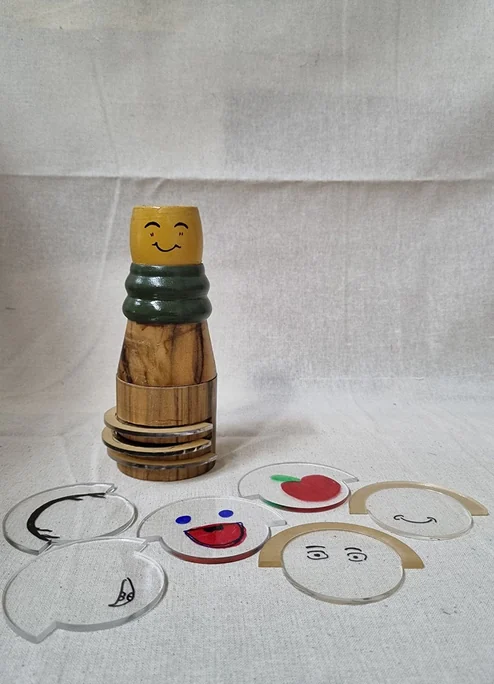

BinoMe was exhibited as a prototype at the Toy-Biz 2024 Expo, on the same table as BlowPli.